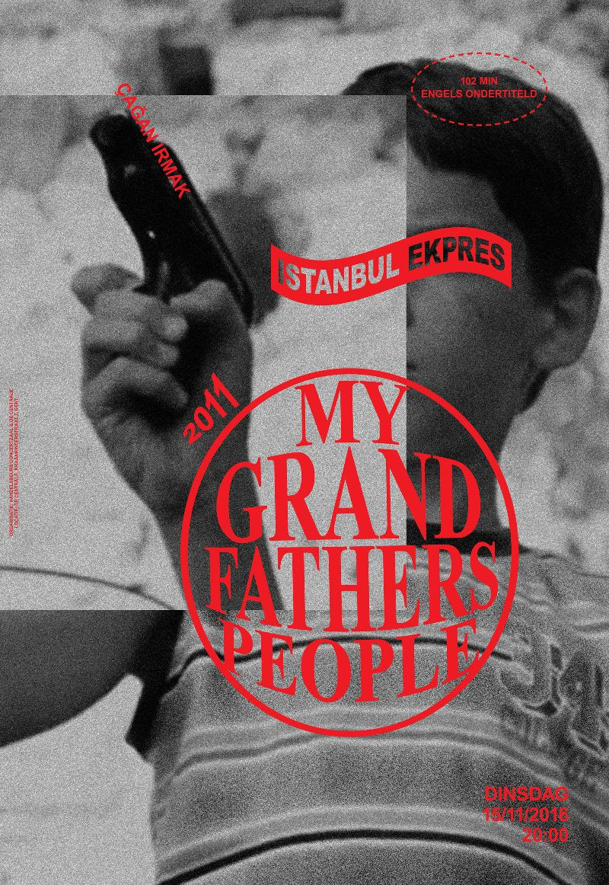

Istanbul Ekpres est le premier travail de ma seconde année. On a du créer une identité pour un film festival à Gand. Les trois posters sont des films qui ont été présentés un festival et devaient avoir la même identité visuelle. Tous les trois étaient sur le pogrom d'Istanbul mais les films étaient fait à des époques différentes et montraient le sujet sous différents points de vues. Le pogrom d'Istanbul étaient de attaques extrêmement violentes visés sur les minorités grecques d'Istanbul en 1955. Cela vient d'une longue historiques de guerres de mouvements migratoires.
Les films étaient fait du point de vue des grecques qui étaient les victimes de ces conflits. Pour créer une identité reconnaisable, j'ai d'abord utilisé la couleur rouge, une couleur forte en terme de signification (conflit, sang, douleur mais également l'amour) et c'est également la couleur du drapeau turque. Les images viennent des films et sont en noir et blanc pour amener l'attention sur la typographie.
On peut clairemnt voir que ces trois posters sont liés ensemble mais ils peuvent également exister individuellement, chacun contient les informations nécessaires pour aller voir le film. Je me suis focalisée sur un équilibre entre la typographie et les images.